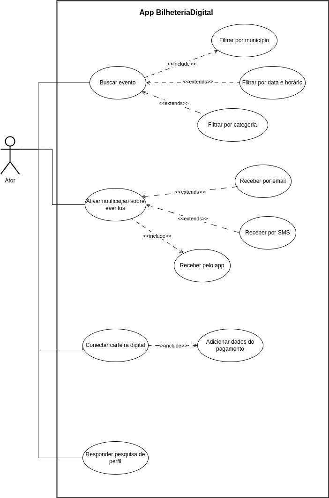

Casos de Uso
Introdução
Um caso de uso se refere a uma descrição detalhada de como o sistema será utilizado em uma determinada situação ou contexto. Ele descreve as interações entre os usuários e o sistema, apresentando os passos necessários para alcançar um objetivo específico. O objetivo dos casos de uso é auxiliar no processo de desenvolvimento de um sistema, fornecendo uma visão clara dos requisitos funcionais do sistema, descrevendo as ações que os usuários podem realizar e as respostas do sistema a ações.
Metodologia
O diagrama de caso de uso é uma representação visual que resume as interações entre os usuários e um sistema, destacando suas funcionalidades e comportamentos. Ele é composto por atores, que representam os usuários, e casos de uso, que descrevem as ações realizadas pelos usuários e as respostas do sistema. Para a realização do caso de uso utilizamos da persona Lara Dias para entender melhor as necessidades e desejos dos usuários finais do sistema. Usando a persona Lara Dias em um diagrama de caso de uso, é possível modelar cenários realistas de uso do sistema que consideram as diferentes necessidades e objetivos do tipo de usuário que ela é. Agora voltando ao assnto sobre os diagramas de caso de uso, pode-se ver na Tabela 1 os elementos do diagrama:
Tabela 1: Elementos do diagrama de casos de uso
| Nome | Função | Elemento |
|---|---|---|
| Ator | Representam os diferentes tipos de usuários externos que interagem com o sistema |  |
| Elipse (Caso de Uso) | É usada para representar os casos de uso no diagrama. Um caso de uso descreve uma funcionalidade ou uma ação específica que o sistema pode realizar em resposta às interações dos atores. A elipse contém o nome do caso de uso |  |
| Retângulo (Sistema) | Usado para representar o sistema ou o bloco em análise. Ele envolve os casos de uso e atores relacionados |  |
| Flecha (Relações) | As flechas são usadas para representar as relações ou interações entre atores e casos de uso |  |
Fonte: Sidney Fernando
Além disso, no diagrama de casos de uso é possível especificar:
- Os requisitos externos de um sistema, ou seja, as funcionalidades necessárias que o sistema deve oferecer para atender às necessidades dos usuários.
- As funcionalidades disponíveis no sistema, ou seja, o que o sistema é capaz de fazer para satisfazer as necessidades dos usuários.
- Os requisitos impostos pelo sistema ao ambiente em que está inserido, definindo como o sistema interage com o ambiente para realizar suas funções.
Diagrama de Casos de Uso
A figura 1 demonstra o diagrama de casos de uso.
Figura 1: Casos de uso do app BilheteriaDigital

Fonte: Sidney Fernando e Geovanna Maciel
Especialização dos casos de uso
As tabelas de 2 a 5 mostram a especialização dos casos de uso.
Tabela 2: Buscar evento
| UC01 | Informações |
|---|---|
| Descrição | O usuário é capaz de buscar eventos por diferentes filtros |
| Ator | Usuário |
| Pré-condições | Acesso à internet, acesso ao app |
| Ação | O usuário encontra eventos |
| Fluxo principal |
|
| Fluxo alternativo |
|
| Fluxo de exceção |
|
| Pós-condições | O usuário tem acesso a eventos que correspondem ao(s) filtro(s) de busca escolhido(s) |
| Data de Criação | 15/05/2023 |
| Rastreabilidade | RF01, RF02, RF10 |
Fonte: Sidney Fernando
Tabela 3: Ativar notificações sobre eventos
| UC02 | Informações |
|---|---|
| Descrição | O usuário é capaz de ativar as notificações sobre os eventos que deseja. |
| Ator | Usuário |
| Pré-condições | Acesso à internet, acesso ao app |
| Ação | O usuário ativa as notificações no aplicativo |
| Fluxo principal |
|
| Fluxo alternativo |
|
| Fluxo de exceção |
|
| Pós-condições | O usuário agora está com as notificações ligadas e será notificado sobre novos eventos |
| Data de Criação | 15/05/2023 |
| Rastreabilidade | RF13 |
Fonte: Geovanna Maciel
Tabela 4: Conectar carteira digital
| UC03 | Informações |
|---|---|
| Descrição | Usuário conecta carteira digital como forma de pagamento no app |
| Ator | Usuário |
| Pré-condições |
|
| Ação | O usuário cadastra uma nova forma de pagamento |
| Fluxo principal |
|
| Fluxo alternativo |
|
| Fluxo de exceção |
|
| Pós-condições | O usuário pode pagar pelos ingressos utilizando um carteira digital |
| Data de Criação | 15/05/2023 |
| Rastreabilidade | RF23 |
Fonte: Sidney Fernando
Tabela 5: Responder pesquisa de perfil
| UC04 | Informações |
|---|---|
| Descrição | O usuário deve poder responder a uma pesquisa de perfil sobre seus gostos para eventos. |
| Ator | Usuário |
| Pré-condições | Possuir uma conta cadastrada e acesso à internet. |
| Ação | O usuário ira responder à pesquisa de perfil e gostos de acordo as opções de eventos ofertadas pelo app. |
| Fluxo principal |
|
| Fluxo alternativo |
|
| Fluxo de exceção |
|
| Pós-condições | O usuário terá em sua tela principal somente eventos que sejam de seu interesse |
| Data de Criação | 15/05/2023 |
| Rastreabilidade | RF18 |
Fonte: Geovanna Maciel
Bibliografia
Lucidchart. Diagrama de Caso de Uso UML. Disponível em: <https://www.lucidchart.com/pages/pt/diagrama-de-caso-de-uso-uml>. Acesso em: 14 maio 2023.
BARBOSA, S. D. J.; SILVA, B. S. Interação Humano-Computador. Rio de Janeiro: Elsevier, 2011.
HENRIQUE, Paulo. Caso de Uso. Repositório da disciplina de Requisitos de Software da Universidade de Brasília, 2022. Disponível em: https://requisitos-de-software.github.io/2022.1-Youtube/modelagem/casouso/. Acesso em: 15 mai. 2023.
MACEDO, Lucas. Caso de uso. Repositório da disciplina de Requisitos de Software da Universidade de Brasília, 2022. Disponível em: https://requisitos-de-software.github.io/2022.2-Lichess/modelagem/casos_de_uso/. Acesso em: 15 mai. 2023.
Histórico de Versões
| Versão | Data | Descrição | Autor(es) | Revisor(es) |
|---|---|---|---|---|
| 1.0 | 13/05/2023 | Criação da página | Sidney Fernando | Geovanna Maciel |
| 1.1 | 15/05/2023 | Adição do Diagrama | Geovanna Maciel e Sidney Fernando | Douglas Alves |
| 1.2 | 15/05/2023 | Adição dos casos de ativar notificação e pesquisa de perfil | Geovanna Maciel | Sidney Fernando |
| 1.3 | 15/05/2023 | Adição dos casos buscar evento e cadastrar carteira digital | Sidney Fernando | Geovanna Maciel |